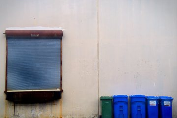

← Anterior
Reklamation & Kundenservice
Siguiente →
Notfälle & Polizei


En Alemania separar la basura no es opcional: cada bote tiene su color, las botellas llevan depósito y los vecinos se dan cuenta. Aquí está qué va en cada bote, cómo funciona el Pfand y cómo hablar del medio ambiente.
| Bote | Qué va | Qué no va |
|---|---|---|
| die Papiertonne (azul) | papel, cartón, periódicos | servilletas usadas, papel sucio |
| der Gelbe Sack / die Gelbe Tonne | envases de plástico, latas, tetrapak | papel, vidrio, comida |
| die Biotonne (café o verde) | restos de comida, cáscaras, filtros de café | plástico, bolsas |
| der Restmüll (negro o gris) | lo que no va en otro: pañales, polvo, colillas | lo que se recicla |
| der Glascontainer | botellas y frascos sin depósito, por color | vidrio de ventanas, focos |
| der Wertstoffhof | muebles, aparatos, pilas, cosas grandes | basura de todos los días |
| Alemán | Español | Ejemplo |
|---|---|---|
| die Umwelt | el medio ambiente | Wir müssen die Umwelt schützen. |
| den Müll trennen | separar la basura | In Deutschland trennt man den Müll. |
| recyceln | reciclar | Glas kann man gut recyceln. |
| Strom sparen | ahorrar luz | Mach das Licht aus, um Strom zu sparen. |
| heizen / lüften | calentar / ventilar | Im Winter lüftet man kurz, aber oft. |
| der Klimawandel | el cambio climático | Der Klimawandel ist ein großes Thema. |
| umweltfreundlich | ecológico | Das Fahrrad ist umweltfreundlich. |
| der Stoffbeutel | la bolsa de tela | Ich nehme immer einen Stoffbeutel mit. |
| verschwenden | desperdiciar | Wir sollten kein Essen verschwenden. |
| öffentliche Verkehrsmittel | el transporte público | Ich fahre mit öffentlichen Verkehrsmitteln. |